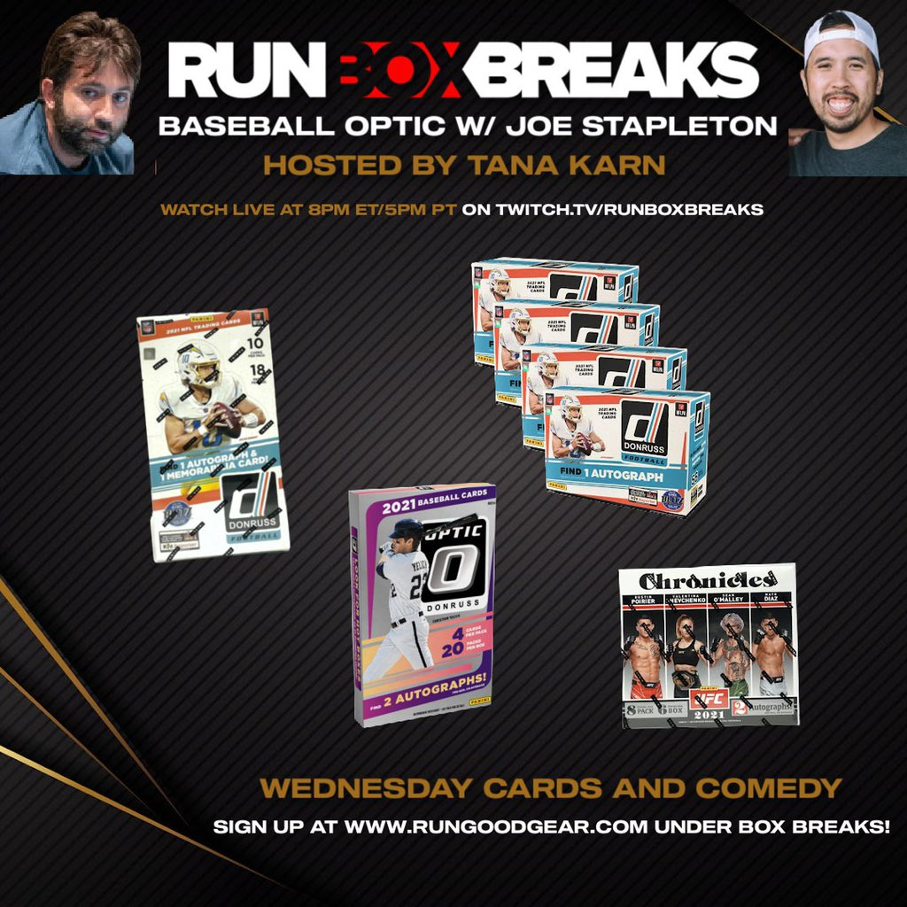
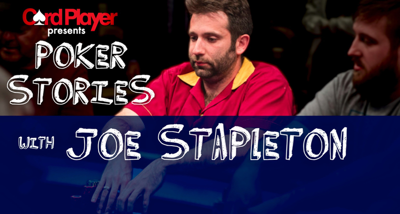
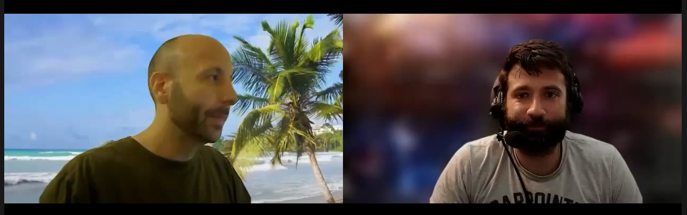
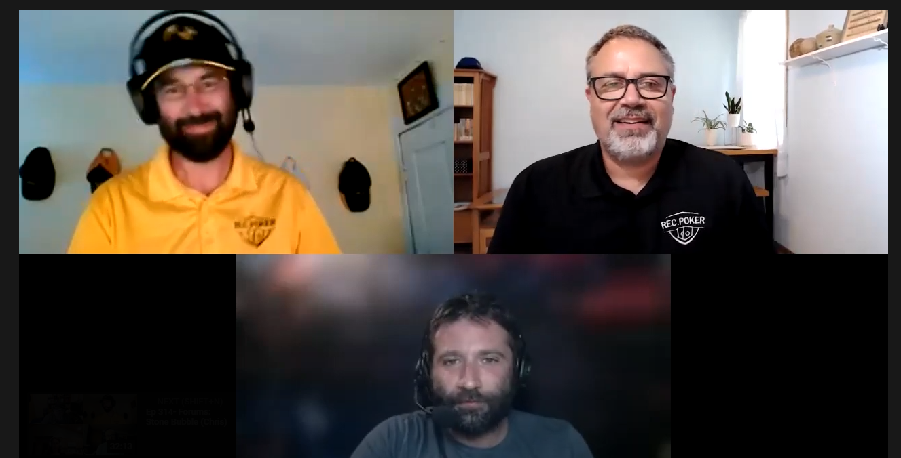

Dec 4th,
2023

Joe "Stapes" Stapleton is a star in the poker world -- as he once put it, he's "poker-famous." He's a longtime poker commentator with credits that include PokerStars,
The World Series of Poker, The Big Game, and Poker Night in America. In a wide-ranging and thoughtful conversation, he outlines his path from upstate New York to Hollywood,
where he's also a stand-up comic and host of the popular "Poker In The Ears" podcast. Joe originally moved to LA with dreams of being a TV comedy writer;
his irreverent sense of humor and willingness to try anything opened doors that he didn't even know existed.
You can listen to the podcast here
Nov 4th,
2023

🔥Get ready for the ultimate poker experience as Joe "Stapes" Stapleton, the iconic voice of PokerStars' "The Big Game," sits down with us in an exclusive interview to discuss the highly anticipated return of the legendary poker show after a 12-year hiatus. 🔥
🎲 Joe shares his insider takes, and what fans can expect from the modern revival of The Big Game. Don't miss out as we delve deep into the world of high-stakes poker action, the "Loose Cannon" qualifiers, and the evolution of poker entertainment. 🎲
You can watch video here
Oct 5th,
2023

This week Nikki & Caitlin are joined by comedian and poker broadcaster Joe Stapleton. Joe talks the return of the North American Poker Tour, competing in the World Series of Comedy & his long relationship in poker media including Poker Stars programming & his podcast Poker in the Ears. He also regales us with the fascinating tale of helping Afghan interpreter Khalid Santor escape persecution and flee to England. Finish up the chat with a fun game redefining popular poker terms did you SPR is "stop penis removal?"
Click the image or here
Sep 23rd,
2023

Poker's funniest commentator drops by to discuss humor, luck, and the value of being brutally honest with yourself in front of others.
To listen to the podcast click the image or here
Sep 5th,
2023

Joe, takes you through his day while on-site for a Pokerstars event. Come along for the ride.
Click the image or here
Jun 3rd,
2022

Joe joins the stream to break some boxes and find some hits.
To check out the stream click here
May 11,
2022

Joe joins Paul to talk about some funny stories from their past as well as some latest news they have to share.
Check it out here
Feb 24,
2022

Featuring Jeff Platt, Joe Stapleton, Haley Hochstetler, and Tana Karn
Feb 13,
2022

Just a couple of LA celebrities & a nobody hanging out...with some Super Bowl talk...and SILAS!!!!!!!!!
To watch the podcast visit here
Feb 1,
2022

If you love poker you already know podcast host and commentator Joe Stapleton, who returns to the show to talk about comedy, commentating, and how various aspects of his professional career have been affected by the events of the last two years. We also get to meet Josh Wilson from CryptoHoldem, who talks to the panel about the different parts of cryptocurrencies and NFTs that seem to attract the poker-playing community. You can learn more about Josh and his live no limit texas holdem NFT community (where holders can win a trip to the WSOP!)
To watch the podcast visit here
Dec 16,
2021

We're full swing into the holiday season! So how do we celebrate? By having a poker commentator on as our guest of course! Joe Stapleton is with us (Caleb Mcduff is guest hosting too!) today as we talk through some of the crazy stuff we all got up to with our families growing up, plus a ton more!
To watch to the Generation DAN podcast episode click here
RGPS: All-Star ProAm 2021
Day 1
Dec 11,
2021

Watch Day 1 of the 2021 RGPS: All-Stars ProAM live from the PokerGO Studio at ARIA Resort & Casino. The feature table is headlined by Joe Stapleton, Tyson Apostol, Jamie Kerstetter, Brad Owen, and 2021 World Champion Koray Aldemir, before a change sees Barstool Smitty, Danielle Andersen, Boston Rob Mariano, and PokerGO's Remko Rinkema join the action as the RGPS: All-Stars ProAM plays down to the final table of seven.
To watch to the RGPS: All-Star ProAm 2021 Day 1 broadcast on Twitch click here
Dec 10,
2021

You don't want to miss the new PokerDeals Podcast Episode 3! 🤑
This one is an in-depth chat with none other than the King of Commentators - Joe Stapleton himself!
To watch to the PokerDeals podcast episode click here
Run Box Breaks
Time to open some packs!
Oct 13,
2021

Cards and Comedy night with @tkarn421 & @Stapes on @Twitch!
To watch to the RunBoxBreaks episode click here
Sept 29, 2021

I mean the title says he is pretty funny, what more do you need to know?
To watch the podcast click here
Aug 18, 2021

Joe Stapleton got his start in the poker world at Card Player, working the WSOP while on hiatus from his job at Mad TV. The Albany, New York native then moved on to other projects, including writing and podcasting, and commentating work for a number of poker broadcasts and TV shows.
To listen to the complete Card Player poker news podcast click here
How To Be A Superhero - The Superhero Show
Episode 2: Joe Stapleton
Aug 11, 2021

To view the this episode click here
Aug 10, 2021

To view the this episode click here
May 8, 2021
To view the this episode click here